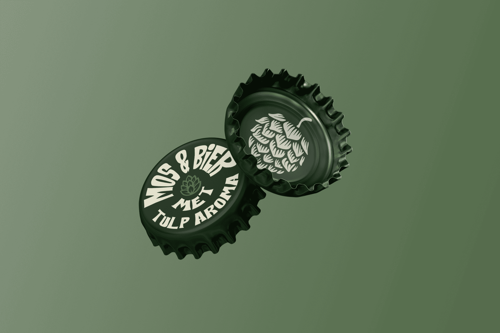
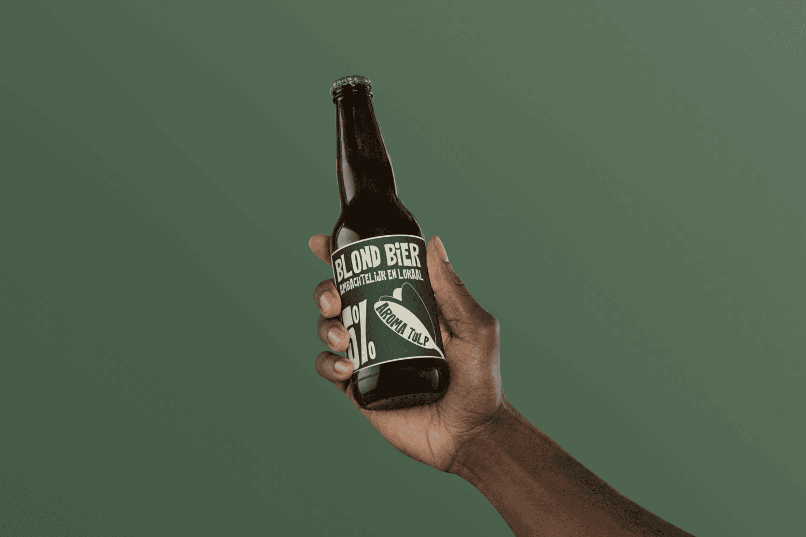
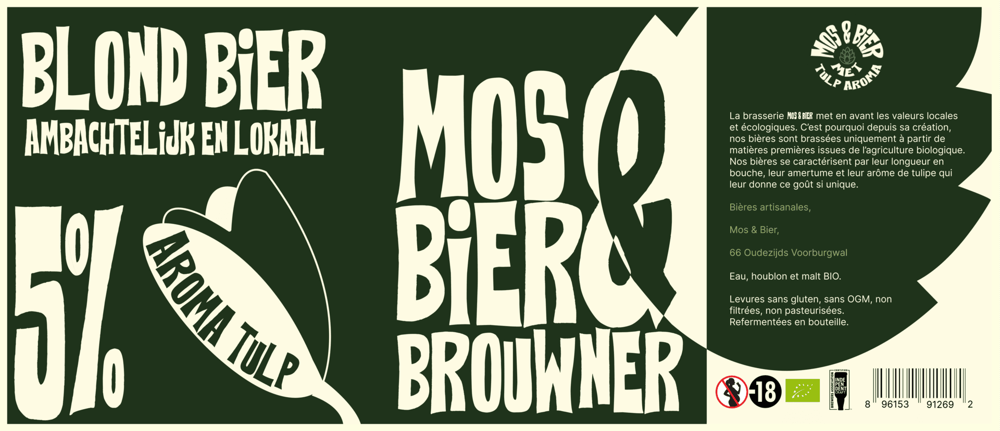

Le problème à résoudre
À Amsterdam, ville particulièrement ambitieuse sur le plan écologique, la consommation de bière n'est pas encore intégrée au plan de développement durable. Le problème central à résoudre est donc de combler ce manque : comment permettre aux utilisateurs des bars et plus particulierement aux consommateurs de bières d'ajouter leur pierre à l'édifice écologique de la ville ?
Ma mission : Créer le concept du bar, son identité visuelle et ses supports de communication. Réaliser et mettre en page un un manuel d'identité de marque et gérer la stratégie d'engagement pour fidéliser rapidement les clients.

Mockup des capsules de bière Mos & Bier
Comprendre avant de créer
Des wireframes aux maquettes
À partir des insights, trois itérations de wireframes basse-fidélité avant de passer aux maquettes haute-fidélité. Chaque décision est documentée pour faciliter la collaboration avec les développeurs.
- Réduction du tunnel de 5 à 3 étapes
- Barre de progression visible à chaque étape
- Refonte de la page produit : hiérarchie visuelle, CTA repositionné
- Micro-interactions sur le panier pour rassurer à chaque action

Etiquette de bière face 1 — Mos & Bier

Etiquette de bière face 2 — Mos & Bier

Etiquette de bière à plat — Mos & Bier
Impact mesuré
Après 6 semaines en production, les premiers chiffres confirment l'impact de la refonte sur les comportements utilisateurs et les métriques business.
Ce que ce projet
m'a appris
Ce projet m'a confirmé l'importance de tester tôt et souvent. Les wireframes basse-fidélité ont permis de détecter des problèmes structurels avant d'investir du temps en haute-fidélité.
J'ai aussi affiné ma façon de documenter les décisions de design pour fluidifier les échanges avec les développeurs lors de l'intégration.